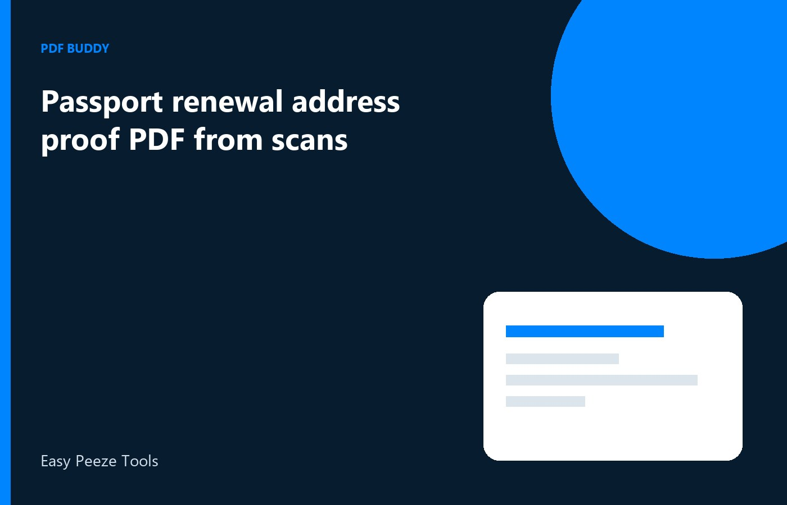

Passport renewal stalls when the address proof is a tilted photo, a two-page bill with the address cut off, or a rent agreement scanned in the wrong order. The Passport Seva form names which proofs it will take, and the upload or the counter expects a PDF that shows the same address you typed. On a Windows PC you can turn that scan into one readable file, check the house number and pin code, and save a copy before the appointment. Do this with a document you already have. If the bill is in someone else's name and the form does not allow that, get a proof that matches the rule instead of editing the page.
Use the proof the form already allows
The renewal screen lists acceptable address proofs and sometimes how recent they must be. Pick one that matches your case, such as a utility bill or a bank statement, and ignore extra IDs that the line did not ask for. Adding more pages does not make a weak proof stronger. It makes the file larger and it mixes addresses. If your present address and permanent address differ, follow the form: each address has its own slot. Do not staple both proofs into one PDF unless that slot says to. Officers compare the text on the PDF with the text you typed. One address per file keeps that check short.
Read the name on the proof before you export. If the document is in a parent's name and you are the applicant, the form's note will say whether that is allowed and what extra page you need. Follow that note. Do not crop the name off to hide a mismatch, and do not type a new name over the scan. Those are not cleanup steps. They change a document. If the proof is wrong, collect a correct one from the issuer and scan that page instead.
- One proof type, matching the dropdown you selected
- Issue date inside the window the form states
- House number, street, city, and pin code all visible
- Applicant name handled the way the instruction describes
Scan so the address line survives
Place the bill flat, with all four corners in the frame, and enough light that the pin code is not a grey smudge. A phone photo is fine as a start. On the PC, turn that image into a one-page or two-page PDF and rotate it until the lines are upright. Crop only the dark border, not the printed address. If the bill has a payment receipt on the back and the form wants both sides, include both as pages in order. If the back is blank, do not add it. Blank pages make the officer wonder if the scan failed.
Zoom to 100 percent and read the address aloud from the PDF, not from the paper in your hand. The file is what gets uploaded. A crease through the pin code, a thumb on the house number, or a shadow from a window is enough to get a remark. Rescan that page rather than painting over the digits. If you need the text to be searchable later, run OCR on your own PC and still keep the original image page so the seal and the logo remain visible.
One proof, one file name
Save the PDF with the proof type and the month, such as Address-Electricity-Aug2026.pdf. You will reuse this name if the appointment is rescheduled. Do not call it scan.pdf or final-final.pdf. If the portal wants a maximum size, compress only after the address is readable, then read the pin code again. A smaller file that loses a digit is not an improvement. Keep the heavier original beside it until the application number is generated.
Some centres still take a print as well as an upload. Print from the PDF you will upload so the paper and the file match. Printing a different photo from the gallery is how people walk in with two versions. If the PDF is password protected because a bank generated it, open it with the password you already have and export a copy the counter can open. If you do not know the password, download a fresh statement from net banking rather than trying to break the lock.
After the appointment, keep the file
Police verification and a later renewal can ask for the same address again. Store the PDF in a folder named with the application year. Do not keep only the acknowledgement mail. The proof itself is what you will need if a letter comes back. Make a second copy on a drive you control. Chat apps are a bad cabinet for this page because they recompress images and the pin code fades.
You are filing a renewal with a proof you are allowed to submit, on the official channel the passport service gave you. Do not mail the same scan to a random website that promises a faster appointment. Finish the PDF on the PC, upload it where the form says, and leave the local copy in place. If the address has genuinely changed, update the proof. Do not stretch an old bill by editing the date.
Questions people actually ask
Can I merge my passport copy and the electricity bill? Only if the renewal instruction puts them in one upload box. Address proof is usually its own slot. A merged file makes it harder to replace a blurry bill without resending the passport pages. Keep them separate until the form says otherwise.
The bill is sideways and the pin code is in the shadow. Is that acceptable? No. Rotate the page until the print is upright and rescan if a digit is hidden. The officer and the upload preview need to read the same address you typed. A darker second photo is better than a corrected digit drawn on the page.
What if the bank statement I wanted to use is locked? Sign in to net banking and use the password the bank already issued, or download a copy that opens. If you cannot get that password, choose another proof the form allows. Do not remove a password you do not know.
Finish the address proof on your own PC before the passport appointment. Pdf Buddy, by Easy Peeze Tools, is a Windows desktop PDF editor that works on the PC. The scan is not uploaded to a random website. The free tier is 2 files a day. Pricing starts at ₹149. Use the download page.